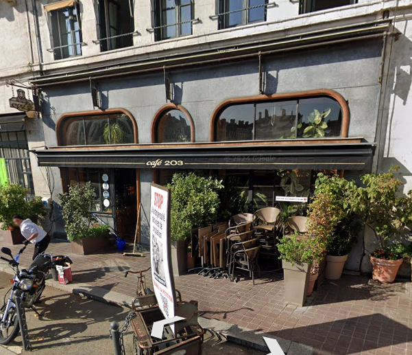

PixelWaveLyon
Posté le 15 Mars 2024Mon nouveau projet PhotoFrame - Besoin de conseils
Bonjour à tous !
Je travaille actuellement sur un nouveau projet appelé PhotoFrame, une application web de gestion de photos. J'ai commencé à coder ça au Café 203 (mon spot préféré à Lyon) pendant mes pauses déjeuner. L'ambiance y est parfaite pour coder, avec une vue imprenable sur la place Saint-Paul.
L'idée est de créer une interface simple mais puissante pour organiser et partager des photos. J'ai déjà mis en place la structure de base sur GitHub Pages, mais j'aimerais avoir vos retours sur l'architecture.
Voici une photo du café où je travaille :
Je suis particulièrement fier de la fonction de filtrage par date que j'ai implémentée. C'est d'ailleurs en travaillant sur cette fonctionnalité que j'ai eu l'idée du projet, en regardant mes vieilles photos de voyage.
N'hésitez pas à me donner votre avis ! Je suis toujours à la recherche de nouvelles idées pour améliorer l'expérience utilisateur.
PS: Si vous êtes intéressés, le code est disponible sur mon GitHub. Je poste régulièrement des mises à jour sur mon Twitter aussi.